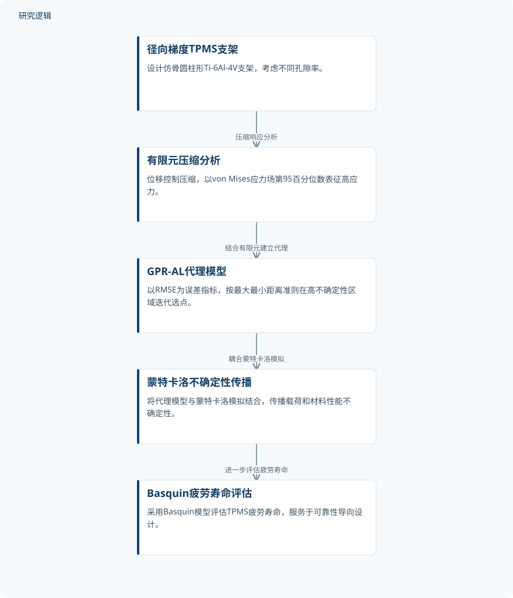

摘要解读
考虑运行条件不确定性的三周期极小曲面结构可靠性分析
Reliability Analysis of TPMS Structures Considering Uncertainties in Operating Conditions
解读更新 2026-11-10 17:56 · 依据公开摘要整理，未核验全文细节
轻量化承载植入物不仅要承受载荷，还要面对载荷与材料性能的不确定性。这项研究围绕径向梯度TPMS钛合金支架，将有限元、主动学习代理模型与疲劳寿命评估连接起来，探索如何更高效地支持可靠性设计与孔隙率选择。
文章目录
多孔支架的设计，不能只看确定工况
三周期极小曲面（TPMS）多孔结构具有用于轻量化承载植入物的潜力。本文关注径向梯度gyroid型Ti‐6Al‐4V支架，研究问题是：当载荷和材料性能存在不可避免的不确定性时，如何评估其疲劳可靠性？
这里的重点不是单纯获得某个工况下的应力结果，而是把不确定性纳入评估过程。摘要提出的框架，旨在为承载型TPMS植入物的可靠性导向设计和孔隙率选择提供计算工具。
从有限元应力到代理模型与疲劳寿命
研究设计了五种仿骨圆柱支架，孔隙率范围为60%至80%，并在位移控制压缩条件下进行分析。为提高对网格变化的稳健性，作者采用von Mises应力场的第95百分位数作为高应力指标，而不是直接以应力最大值作为该指标。
随后，研究建立基于主动学习的高斯过程回归代理模型（GPR‐AL），采用均方根误差（RMSE）作为误差指标，并通过最大最小距离准则，从高不确定性区域迭代选择新的训练点。
在此基础上，作者将GPR‐AL模型与蒙特卡洛模拟结合，传播输入不确定性，再采用Basquin模型评估TPMS结构的疲劳寿命。摘要明确给出了这些环节，但未展开具体参数与实现细节。
依据摘要整理的TPMS疲劳可靠性分析过程


仅概括摘要明确陈述的研究环节及其关系，不代表论文原图，也不补充未报告的实验配置或结果。
下载 SVG图示关系说明
实线表示相邻阶段的信息流，虚线表示跨阶段联系或反馈。
径向梯度TPMS支架 → 有限元压缩分析：压缩响应分析；有限元压缩分析 → GPR‐AL代理模型：结合有限元建立代理；GPR‐AL代理模型 → 蒙特卡洛不确定性传播：耦合蒙特卡洛模拟；蒙特卡洛不确定性传播 → Basquin疲劳寿命评估：进一步评估疲劳寿命
摘要报告的是计算工具价值，而非最优孔隙率
作者报告，该方法能够为运行条件不确定性下的TPMS承载植入物提供计算高效的可靠性分析工具，服务于设计与孔隙率选择。这一结论属于框架层面的效用判断；摘要没有给出计算加速幅度、寿命预测误差，也没有指出哪种孔隙率最优。
样本、对照与验证范围仍需进一步阅读
摘要中的五种支架是设计对象，不能据此认定为五个实体试验样本。仅凭摘要，无法判断训练与验证样本规模、载荷及材料参数的概率分布，也无法确认是否采用独立疲劳试验或其他方法进行对照验证。
摘要同样不足以判断模型对其他结构、材料或载荷形式的适用范围，以及效率与精度之间的具体权衡。这些属于当前资料未交代的信息，不能据此断言论文没有开展相关比较或验证。
阅读启发：关注代理模型如何支撑可靠性判断
阅读启发：对于结构设计与疲劳可靠性研究，值得继续关注高应力指标、主动学习选点和不确定性传播之间的衔接。进一步阅读时，可重点核对：第95百分位应力的网格稳健性如何评估，代理模型误差如何检验，以及这些误差对疲劳可靠性判断有何影响。
以上为本站阅读启发与建议，不是论文已验证的结论。